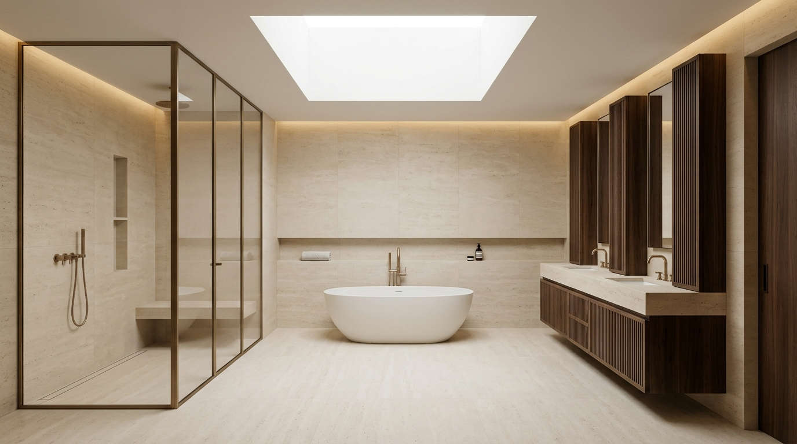
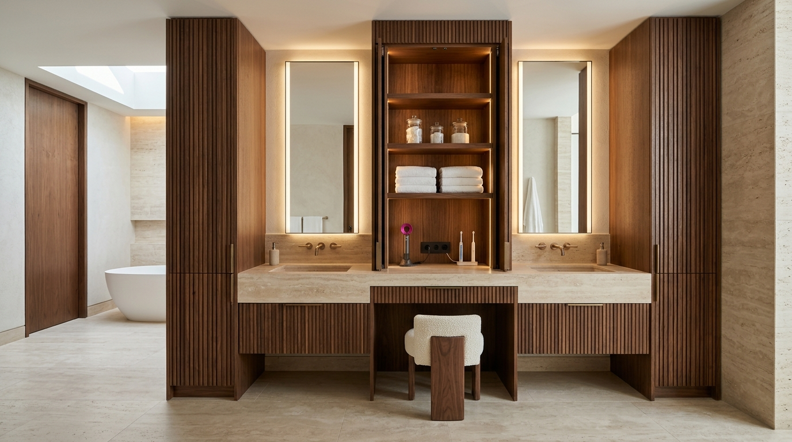

01Core idea — travertine & walnut
Replaces the diagonal corner platform and fragmented cabinetry with three materials used throughout: honed Roman travertine slabs, quarter-sawn fluted American black walnut and brushed champagne bronze.
02Daily use & circulation
Removes the 2-step tub platform for a level, radiant-heated wet zone under the existing skylight. The 50"×60" shower becomes a 50"×84" enclosure with an 18" heated bench, and 102" (8'-6") stays clear between the vanity and west cabinet fronts.
03Storage — 136.78 ft³ concealed
Hairdryer, toothbrushes and shavers stay plugged into 120 V GFCI outlets inside the S-01B tower. Hampers, bath sheets and full-height vacuum and mop storage sit behind the 24"-deep S-02 west wall. Volumes are internal envelopes before shelves and hardware.
04Plumbing, mechanical & windows
WC (pan centre X=125", Y=176") and east vanity drain wall stay in place: 0" relocation. Option A converts to a tankless heater in a 50"×16" chase to lengthen the shower to 84"; fuel, venting and sizing to be confirmed by the plumber. Option B keeps the 50"×40" utility closet footprint unchanged. Skylight and north / west windows are retained with privacy glazing or shutters.